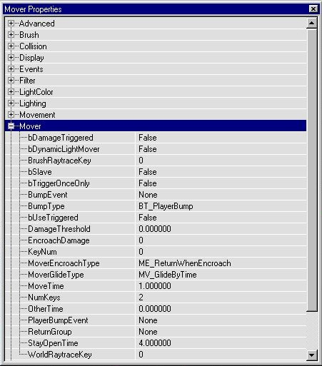
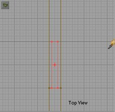
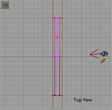
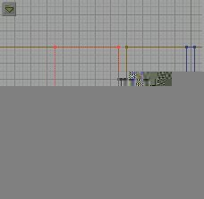
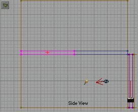

There are several types of movers in Unreal. I am not going to get into a WHOLE lot of detail on each kind, but I will cover the major types and give enough information on each one to get you started. As with anything in UnrealED the best way to learn is to do. I will give you a basic understanding of how different types of movers work, and then give you some specific properties of each and turn you loose. This is a two part tutorial. The Mover types covered in each part will be as follows:
Simple Movers Part One Rotating Movers Part Two Looping Movers Part Two Attach Movers Part Two
Simple movers are made by adding a brush to the world you want to use for a mover, surrounding the brush with the red brush and intersecting it. Use the new red brush to add your mover. It is critical that the scaling and resizing of the brush be reset before intersecting. If you don't the mover will not work right. I usually use RESET ALL under the brush menu at the top, but you can also right click the red brush and select reset all. It is also crucial to have your textures aligned and applied correctly because one you intersect the brush, the mover will be identicle to it and cannot be changed.
So you got a level and you think you need a door in it huh? Well close the level you want the door in and start a new one. I will walk you thru making a simple door first, and then get into a couple other more complex doors. Once you learn the basics go back to your level and apply them.
Start off by loading a texture pack you like(I chose Starship). Next set your cube brush to 256 x 512 x 512 and subtract a room. Next reset your rush size to 256 x 512 x 32 and place it in the middle of the room, so you make a wall that divides your room in half. Add the brush. This is the wall we will place our door in.
Now we need to cut a hole in the dividing wall to place the door in. Reset the brush size to 256 x 256 x 32 and place it in the center of your wall and subtract. If you followed along you should have something like this:

Now, off to the side of the main room, build another room, this time make it 512 x 512 x 512. Pick a light texture for all six sides of the room. It doesn't matter what texture, this is just the room we are going to use to build our movers in and no one will ever see it but you. I will refer to this room as your builder room from now on. Ok, our hole for the door is 256 x 256 x 32. So we need to build our door 256 x 256 x 16. This way we will leave some room on either side of the door to make it look like a more realistic doorway. Set your brush size to 256 x 256 x 16 and make sure it is in the center of your builder room, not touching any of the walls and then add the brush to your world. Pick an appropriate door texture and apply it to the newly added brush.

Once you have the brush textured the way you want it, then reset the red brush and resize large enough to completely surround the door brush, but not touch anything else (I used 272 x 272 x 32). Position the red brush around the door brush and then intersect it and the red brush should wrap itself around the door brush.


Now click the ADD MOVER button and you should get a purple brush in the door way. This purple brush will be the mover, and though it is invisible in the editor, it will look exactly like the brush we intersected. Now we need to set some of the doors properties. You'll need to either turn off the red brush (by pressing B in the window) or move it out of the way. Once the red brush is out of your way, then right click the purple mover brush to open up the Mover Properties window. There are only a few properties we need concern our selves with. First go to Object and InitialState. This tells the engine how we intend to open this door. The default is BumpOpenTimed. Like it sounds, when touched, this door will open for a specified amount of time and then close. Let's use that. Leave it at BumpOpenedTimed. Now open the Mover section. Whoa! Lots of properties there!

The first one to check is MoverEncroachType. This tells the editor what to do if someone is in the way of the door when it closes. The default is ME_ReturnWhenEncroached. With this setting, if you are standing in the doorway when the door closes, it will open back up until you are out of the way, then it will close. Let's go with that for now.
Next look at some of the other properties. We are going to use all the defaults for now, but often times you will want to set things like MoverTime (how fast it opens/closes), bTriggerOnceOnly (to open once and stay opened), bUseTriggered (If it will be trigger operated), and later on NumKeys (for how many key frames it will have).
Which brings us to Key Frames! Key frames are "points" where the mover will move to. Obviously you need these to tell the mover where to go. You can have 8 key frames (numbered 0 to 7). If you right click the mover brush you will see on the pop up menu under Mover Keyframes all the key frames numbered. We want to make our door slide straight up and down. One might think that when you move a mover to a certain position you would then select that key frame number.
This is OPPOSITE of how it works. We add the mover in it's 0 (or base) position. While it is there if we right click and select mover keyframes and keyframe 1 we can then move the mover to it's first key frame. When you move the mover to key where key frame one will be, then select keyframe 0 and it will automatically go back to its base position. Remember, When the mover is in the BASE or STARTING POSITION select KEY FRAME 1 and move it to KEY FRAME 1, then select KEY FRAME 0 and it will return to base.
Think of it like "recording" where the mover will go. You pick one, move it to one and it remembers this path.
So while the mover is in it's base position where we added it, select key frame one, then move the mover straight up to where we want it to open to (I usually leave a little lip) and then select key frame 0 and the mover will snap back home.


At this point we have made a simple door that will slide up when touched, wait a couple seconds and then slide closed. Add some lights (on both sides of the door), add a PlayerStart, rebuild and run your map. Test the door a few times and make sure it works. If all went well the door worked just as expected.
Sounds"But Wolf, my door is silent?" Why yes it is! That is because we didn't set any sounds to it. . . yet. Open up the mover properties and then click on MoverSounds. For normal doors and lifts we need to add a sound to each field, except MoveAmbientSound. The names of the different sounds should be self explanatory. In the browser change from Textures to SoundFX. Load an appropriate sound pack. I chose DoorsMod because I chose a futuristic theme. As you can see the sound file names tell you where to put them. Sounds with "end" in the name would go to ClosedSound and OpenSound, and ones with "start" would go in OpenedSound and ClosedSound. Easy enough, huh? once you have added your sounds the Mover Properties dialog should look like this:

We could have just as easily made the door slide open to the left or right by setting different key frame positions. Let's make a double door that slides open to the side. Start by making a cube brush 256 x 256 x 32 and aligning it against a wall then subtracting it.

Now click on the starting room brush to highlight it. Let's make a copy of the first room. Right click and select Copy Polygons To Brush. Line it up like the image below and subtract it. You should now have another room, connected to the first by a small doorway.

Resize your cube to 256 x 128 x 16 and drag it into the builder room. Again, make sure it is floating in the air and not touching anything else. Add it to your world Select an appropriate door texture. Once you have it textured and aligned as necessary, intersect it with the red brush like we did the first door. Drag the red brush into the new door way we created between the two big rooms and align it to one side.
Now add a mover. Set the key frames so that the door will slide open to the side and out of the way like below:


We need two doors for this double door so go back to the builder room, intersect the new door brush again and bring the red brush back and line it up next to the first door. Set the key frames of this door to open the opposite direction of the first.

To get these doors to open simultaneously we are going to make this door open by a trigger. Select both movers (highlight one, then while holding control highlight the other) and open the Mover Properties dialog. Under Events set the tag to something unique (like slider1). This is the name of the door set the trigger will open.
Under Object set the InitialState to TriggerOpenTimed. While you have properties opened you can also set the sound like we did before.
Now we need a trigger to open the doors. in the browser choose classes, go down to triggers and expand it. Near the bottom (next to last) you will see one that just says Trigger. Click on that (don't expand it). Now add the trigger to your room, and move it right in the middle of the two doors, near the bottom (see below).


Now open up the trigger properties and expand events. Under Event put the name of the two doors (slider1 in our example). Now, add some lights, rebuild and go check it out. When you approach the double doors they should slide open in opposite directions simultaneously.
Our third simple mover will be a lift. A very simple one. You build a lift just as you do a door. First we need a place for the lift. Go to the newest room we made and duplicate it (copy polygons) and add it on top of the existing room. Now set your cube brush to 16 x 512 x 256 and position it like below. This will make a floor/ceiling, dividing the room in half height-wise.

Select a floor texture and add this brush to the world. Now drag the red brush into the builder room. As you can see this brush is too big (or rather, the room is too small) to intersect this brush without touching anything, so either expand your builder room or build another bigger one. Once you have the room big enough go back and duplicate the floor/ceiling we just made (Copy Polygons to Brush) and drag the brush into the now bigger builder room. Make sure it isn't touching anything and add it to the world. Select whatever textures you want, and intersect it with the red brush like we did the doors. Now drag the red brush to the room where we want the lift and lay it on the floor. Align it so it is opposite the floor/ceiling we added earlier.


Now add the mover and set keyframe one so that it is even with the floor/ceiling like below.
The only properties we need to change for the lift is under Object InitialState. Change it to StandOpenTimed. It works like bumpopentimed, but if we use that the lift will go up as soon as you touch the edge of it, leaving you behind. Standopentimed waits until your on the lift before it moves. Set the sounds for the lift, add a light in the upper part of the room and rebuild. Go try it out. Go on, I'll wait here.
You should have a pretty good idea of how to make basic movers now. You can set more keyframes if you want, but under Mover Properties mover set the NumKey to however many keyframes you have. Remember key frames start numbering at 0 so if you have just set key frame 3 then you have 4 key frames.